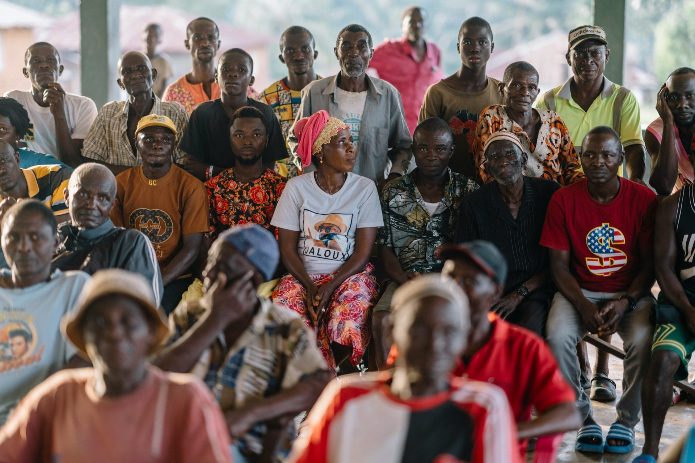

Dignity
Every person deserves to be treated with respect, without judgement or assumptions about their circumstances.
Our story and purpose
A community foundation concept built around practical support, shared responsibility and the belief that everyone deserves dignity.

The reason behind the work
Hands of Hope was imagined as a response to the everyday challenges faced by people and families who need a helping hand.
The fictional organisation focuses on practical community activities — including food drives, clothing donations and outreach — while communicating with care and respect. This student website concept demonstrates how digital information can make an organisation easier to understand and approach.
Project note: Hands of Hope Foundation is a fictional organisation created for the WEDE5020 web-development assessment. This website is a student project, not a live charity or active donation service.
What guides us
Good intentions matter most when they are expressed through consistent, thoughtful action.
Every person deserves to be treated with respect, without judgement or assumptions about their circumstances.
Listen first, respond thoughtfully and recognise the human story behind every request for support.
Meaningful support grows when volunteers, neighbours and groups work toward a shared purpose.

Mission
Our proposed mission is to support people in need by helping provide basic essentials and showing care, kindness and compassion through community outreach.
Our vision is a community where people can access basic support and feel valued, connected and cared for.
See the programmesMove from intention to action
Explore the proposed ways to help or share a question through the demonstration enquiry form.